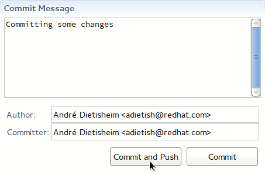
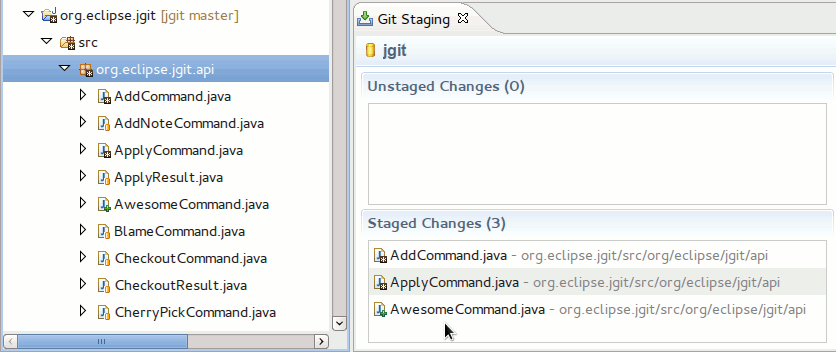
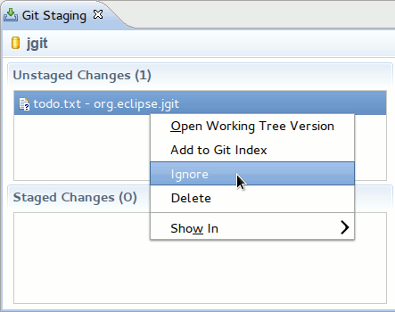
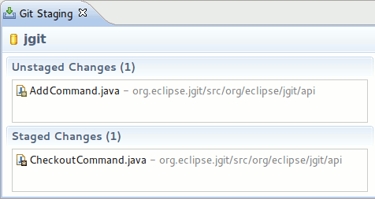
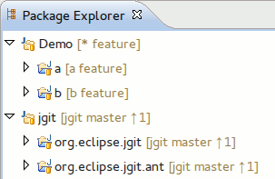
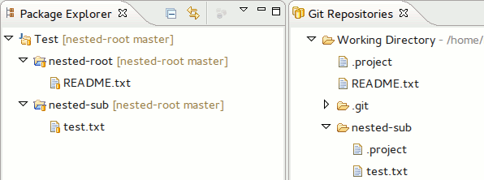
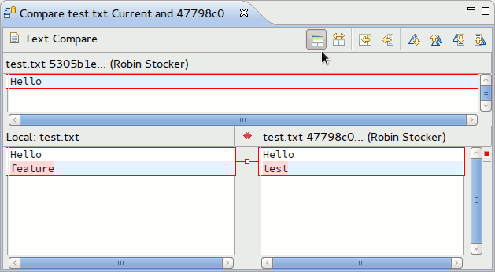
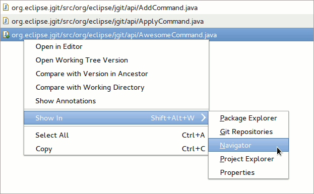

| EGit 2.2 New and Noteworthy | ||
|---|---|---|
|
|
||
| Performance Improvements | ||
We moved the commit button from the toolbar to the form. Furthermore we now allow you to push and commit in a single step by hitting the appropriate form button. The push occurrs either to the default remote or to upstream that the user configures in the push configuration dialog. ( bug 388913):

Files and entire folders can now be staged by dragging them from the Package Explorer and other navigator views to the Staged Changes table of the Staging view ( bug 385412).
For example, the package org.eclipse.jgit.api is dragged from the Package Explorer on the left:

Which results in all the contained files being staged:

For an untracked file, the Staging view now has a Ignore action in the context menu. This will add the file to .gitignore. ( bug 385178)

The Staging view now honors label decoration preferences. For example, when the label decorations are configured to not show any text decorations, but instead use an icon for the "dirty" state ( bug 390297):

Working sets now also receive the decorations, depending on what projects they contain. When all are from the same repository, the repository name, branch name and branch status is shown. When they are from different repositories but all on the same branch, only the branch name is shown. ( bug 369969)

Resource filters are now handled correctly, e.g. when used to exclude sub projects from appearing in the parent project tree with a nested project layout. ( bug 358901)
The following shows an example of a nested project layout. Notice that there is a .project in the root of the working directory and that the .project for nested-sub is in a sub directory:

Additionally, the Import Projects... wizard in the Git Repositories view now searches for nested projects ( bug 396067). The standard Import Existing Projects wizard supports this since Eclipse 4.3 ( bug 144610).
When comparing a file against another commit or branch, the content of the common ancestor can now be shown using the Show Ancestor Pane button in the compare editor. This will show a third text field showing the content of the ancestor.
The common ancestor (also called merge base) is the first parent commit that both compared commits have in common. E.g. when a feature branch was created from master, the common ancestor is the commit on master after which feature was split off.

The listing of changed files of a commit and in the Staging view now has a Show In entry in the context menu, e.g. to show a file in the Package Explorer. The usual keyboard shortcut can also be used to show the menu. ( bug 363567)

|
|
||
| Performance Improvements |